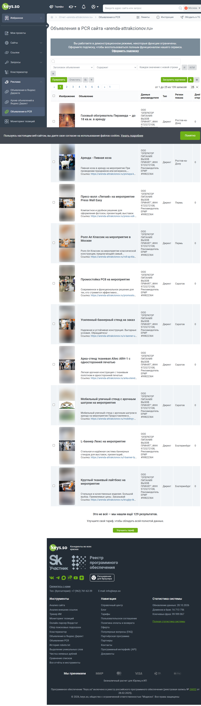
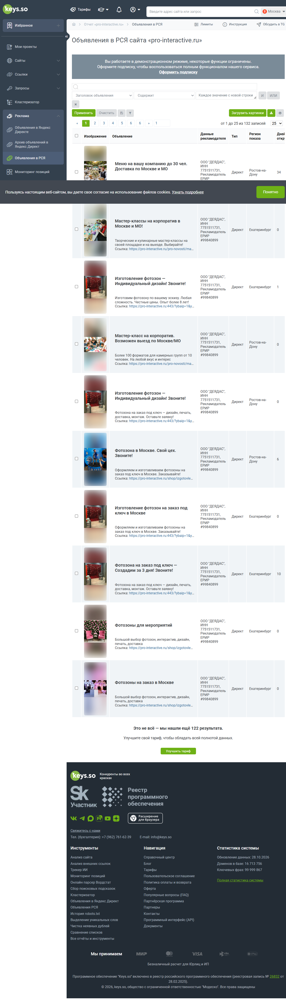
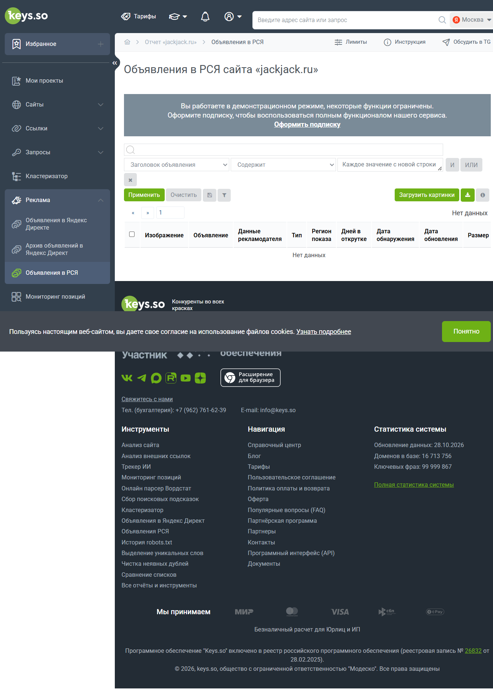

ЗВУК И СВЕТ
LSmedia: доставка и монтаж
В тексте названы техника и работы. Для «Спектра» это идея проверить понятное объявление про звук и свет с монтажом. Данных о заявках LSmedia нет.
Смотреть все 10 записей LSmedia ↓ЯНДЕКС · РЕКЛАМА НА САЙТАХ И В ПРИЛОЖЕНИЯХ
80 рекламных записей по восьми сайтам: изображения, предложения и страницы перехода. Отдельно приведены состав выборки и сводные данные на 2 ноября.
Рабочий список включает 25 доменов. Подробные результаты доступны по девяти; у восьми найдены рекламные записи, у одного — нет данных. Это частичная выборка, подходящая для разбора содержания объявлений.
| Шаг | Сколько | Что это значит |
|---|---|---|
| Рабочий список | 25 доменов | Адреса сайтов в нашем рабочем списке. |
| Доступные отчёты | 9 доменов | Это фактический охват того прохода; не случайная и не полная выборка рынка. |
| Нашлись записи РСЯ | 8 доменов | У JackJack сервис ответил «нет данных». |
| Проанализированные записи | 8 × 10 = 80 строк | Демо открывало первые 10 записей каждого из восьми архивов. |
| Без подробного отчёта | 16 доменов | Их таблицы РСЯ в том проходе не получены. |
Демодоступ показывает до 10 записей одного домена и ограничивает число открываемых отчётов. Общий размер архива и количество доступных строк — разные показатели. Порядок записей отражает находки сервиса, а не результативность рекламы.
Подробные таблицы по 16 доменам и мобильные отчёты Keys.so не получены. Мобильная выдача исследована отдельно; краткие сводки не заменяют подробные данные об объявлениях.
Снимок сообщения о дневном лимите ↗ · Какие 16 доменов остались →
Это первые примеры для обсуждения с клиентом. Ниже можно открыть все 80 доступных объявлений восьми компаний ↓
ЗВУК И СВЕТ
В тексте названы техника и работы. Для «Спектра» это идея проверить понятное объявление про звук и свет с монтажом. Данных о заявках LSmedia нет.
Смотреть все 10 записей LSmedia ↓ТЕХСОПРОВОЖДЕНИЕ
Одно объявление обещает выездное сопровождение, а ссылка ведёт в раздел студии. Наше объявление должно вести на страницу той услуги, которую оно обещает.
Смотреть все 10 записей Fresh Vision ↓ЭКРАНЫ
В объявлении перечислены виды экранов и сказано о доставке. Для «Спектра» это пример отдельного предложения об экранах, если мы можем подтвердить модели и условия монтажа.
Смотреть все 10 записей ESmedia ↓Эти тексты помогают придумать варианты объявлений, но не доказывают, что конкуренты на них заработали.
| Поле | Пример и простой смысл | Чего оно не доказывает |
|---|---|---|
| Домен | rentaplazma.ru — адрес одного сайта. У компании могут быть и другие сайты. | Число компаний, рекламных кабинетов или клиентов. |
| Объявлений в архиве | 167 — число записей сервиса для сайта на дату снимка. В демо открыли 10. | 167 активных кампаний, 167 уникальных идей или 167 заказов. В строках могут повторяться текст и картинка. |
| «Регион показа» | Город, где сборщик Keys.so впервые обнаружил объявление. | Географические настройки рекламодателя. Екатеринбург в поле не исключает показы в Москве. |
| «Дней в открутке» | Показатель срока наблюдения объявления сервисом. Например, 55 у ESmedia. | 55 дней непрерывных показов людям, оплаченные клики или прибыль. Ноль также не означает отсутствие рекламы. |
| Показы / находки Keys.so | Если поле присутствует, оно считает встречи объявления сборщиком. | Все показы реальной аудитории из кабинета конкурента. |
| 0 / нет данных | Сервис не выдал запись для домена в этой базе и этом срезе. | Что компания никогда не рекламировалась. |
Регион в Keys.so соответствует первому обнаружению записи парсером. Колонка не раскрывает настройки географии чужой кампании. Содержание всех 80 доступных записей можно сравнивать с учётом неполноты архива.
28 октября открывали таблицы объявлений РСЯ. 2 ноября открыли десять кратких карточек доменов: в них рядом находятся счётчики обычного поиска, поисковой рекламы и РСЯ. Это другой вид отчёта. Десять карточек не означают ещё сто просмотренных баннеров.
| Домен из старой проверки | Записей РСЯ 28.10 | Счётчик РСЯ 02.11 | Что изменилось |
|---|---|---|---|
| rentaplazma.ru | 167 | 167 | счётчик не изменился |
| arenda-attrakcionov.ru | 139 | 140 | +1 |
| pro-interactive.ru | 132 | не переснят | свежей строки нет |
| fvis.ru | 118 | 119 | +1 |
| esmedia.ru | 110 | не переснят | свежей строки нет |
| otido-group.ru | 20 | 20 | счётчик не изменился |
| lsmedia-sound.ru | 19 | не переснят | свежей строки нет |
| soundman24.ru | 17 | 17 | счётчик не изменился |
| jackjack.ru | 0 | не переснят | свежей строки нет |
В срезах повторяются пять доменов. Архивы Fresh Vision и «Аренды аттракционов» увеличились на одну запись; это изменение базы наблюдений. Дополнительные сводки по basslinegroup.ru, ipro.moscow, proektori.ru, provaibeindastry.ru и rl-tech.ru не содержат подробного разбора баннеров. Пустые поля означают отсутствие зафиксированного значения.
Нажмите на компанию или откройте все снимки сразу. Это восемь изображений по десять записей; у каждой компании есть ссылка на живой отчёт Keys.so. Снимки показывают тексты и изображения, но не реальные показы, клики или заявки.
Экраны · архив Keys.so: 167
О чём реклама: LED-экраны, сенсорные панели, телевизоры.
Как читать: Подходит для сравнения рекламы экранов. Все десять открытых записей сервис впервые обнаружил в Екатеринбурге, хотя тексты обещают доставку по Москве и области. По этой метке нельзя решить, где кампания показывалась.
Смежный прокат · архив Keys.so: 139
О чём реклама: Обогреватели, стенды и реквизит.
Как читать: Это широкий прокат для событий. В десяти доступных объявлениях не нашлось предложения звука или света, поэтому не используем их как образец нашей основной услуги.

Другая услуга · архив Keys.so: 132
О чём реклама: Фотозоны, мастер-классы, кейтеринг.
Как читать: События общие, но рекламируемая услуга другая. Не считаем эту компанию прямым конкурентом по звуку и свету только потому, что она встретилась в архиве.

Близкий конкурент · архив Keys.so: 118
О чём реклама: Техническое сопровождение, студия, трансляции.
Как читать: Это близкий конкурент по комплексной технической части. В одном объявлении обещание выездной услуги ведёт на страницу студии: для «Спектра» проверяем, чтобы текст и страница говорили об одном.
Экраны · архив Keys.so: 110
О чём реклама: Экраны и оборудование для мероприятий.
Как читать: Есть объявления с экранным оборудованием и доставкой по Москве и области. Запись, наблюдавшаяся 55 дней, показывает повторные находки сервисом, но не её заявки или прибыль.
Смежные услуги · архив Keys.so: 20
О чём реклама: Шатры, сцены и техника.
Как читать: Для «Спектра» полезны только пересекающиеся услуги. Долгое наблюдение объявлений о шатрах не доказывает, что реклама звука окупается.
Близкий конкурент · архив Keys.so: 19
О чём реклама: Звук, свет, доставка и монтаж.
Как читать: Самый близкий текстовый пример в этих снимках: названы услуга и состав работ. Проверяем у себя ясное предложение, не копируя чужое объявление целиком.
Близкий конкурент, старый снимок · архив Keys.so: 17
О чём реклама: Звук и свет для частных мероприятий.
Как читать: Доступные десять записей датированы 2024 годом. Они показывают прежние формулировки, но не подтверждают, что именно эти объявления работают сейчас.
ПО РСЯ В БАЗЕ НЕТ ЗАПИСЕЙ
Keys.so не нашёл записей РСЯ по этому домену. Это никак не отменяет объявления JackJack в рекламной выдаче поиска: поиск и РСЯ — разные места показа. По нашей проверке нельзя утверждать, что компания никогда не использовала РСЯ.

По 16 доменам рабочего списка подробные отчёты РСЯ не получены. Их объявления не входят в набор проанализированных записей. Выборка из 25 доменов не охватывает весь рынок.
Чтобы оценить рекламу именно для Москвы и области, нужны данные о настройках географии или наблюдение показов в нужном регионе. В чужом архиве таких настроек нет. Открыть общий реестр компаний и статус проверки →
РСЯ — рекламные места на сайтах и в приложениях сети Яндекса. Человек может увидеть предложение без запроса об аренде прямо сейчас. Это даёт дополнительный охват, но интерес к мероприятию и готовность заказать технику ещё нужно проверить.
Для «Спектра» уже сохранена отдельная кампания РСЯ 715714529: одно фото конференции, один заголовок, один текст, главная страница, автотаргетинг и четыре тематические фразы. Отдельного списка посетителей для возврата, сегментов или интересов в группе нет. Значит, это заготовка для поиска новой аудитории, а не настроенный ретаргетинг и не проведённое сравнение двух вариантов.
ESmedia и LSmedia дают близкие примеры содержания: назвать услугу, монтаж и сопровождение. Шатры Otido и кейтеринг Pro-interactive — смежные примеры; их сроки наблюдения не обосновывают выгодность нашей техники. Площадки в чужих UTM не устанавливают ни настройки автотаргетинга, ни качество клиентов.
Все фактические настройки и их смысл → · Как проверим результат одного пилота →